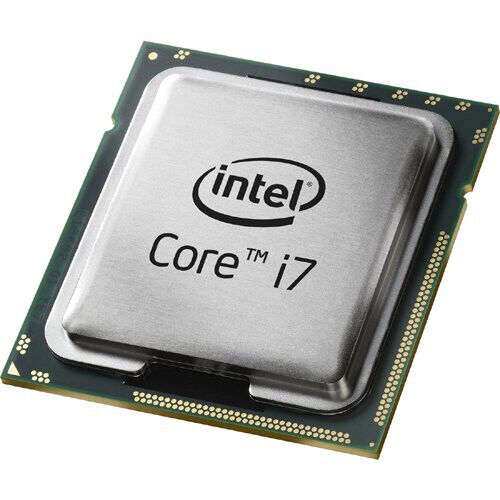

MICROPROCESADOR / CPU |
||
La unidad central de procesamiento (conocida por las siglas CPU, del inglés Central Processing Unit) o procesador es un componente del hardware dentro de un ordenador, teléfonos inteligentes, y otros dispositivos programables. |
||
| Su función es interpretar las instrucciones de un programa informático mediante la realización de las operaciones básicas aritméticas, lógicas, y externas (procedentes de la unidad de entrada/salida). Su diseño y su avance ha variado notablemente desde su creación, aumentando su eficiencia y potencia y reduciendo el consumo de energía y el coste. |
 | Un ordenador puede contener más de una CPU (multiprocesamiento). En la actualidad, los microprocesadores están constituidos por un único circuito integrado (chip) aunque existen los procesadores multinúcleo (varias CPU en un solo circuito integrado). Un circuito integrado que contiene una CPU también puede contener los dispositivos periféricos y otros componentes de un sistema informático; similar a un microcontrolador (menos potente en RAM) se le denomina sistema en un chip (SoC). |
Componentes:
|
||
Historia |
||
| El microprocesador surgió de la evolución de distintas tecnologías predecesoras, básicamente de la computación y de la tecnología de semiconductores. En la posguerra, a mediados de la década de 1940, la computación digital emprendió un fuerte crecimiento también para propósitos científicos y civiles. La tecnología electrónica avanzó y los científicos hicieron grandes progresos en el diseño de componentes de estado sólido . Módulos de tubos al vacío componían circuitos lógicos básicos, tales como compuertas y flip-flops. Ensamblándolos en módulos se construyó la computadora electrónica . La construcción de una computadora digital precisa numerosos circuitos o dispositivos electrónicos. Un paso trascendental en el diseño de la computadora fue hacer que el dato fuera almacenado en memoria. La tecnología de los circuitos de estado sólido evolucionó en la década de 1950. El empleo del silicio , de bajo costo y con métodos de producción masiva, hicieron del transistor el componente más usado para el diseño de circuitos electrónicos. Por lo tanto el diseño de la computadora digital se reemplazó del tubo al vacío por el transistor, a finales de la década de 1950. La tecnología LSI fue haciendo posible incrementar la cantidad de componentes en los circuitos integrados. Sin embargo, pocos circuitos LSI fueron producidos, los dispositivos de memoria eran un buen ejemplo. Las primeras calculadoras electrónicas requerían entre 75 y 100 circuitos integrados. Después se dio un paso importante en la reducción de la arquitectura de la computadora a un circuito integrado simple, resultando uno que fue llamado microprocesador, unión de las palabras «Micro» del griego μο-, «pequeño», y procesador. El primer microprocesador fue el Intel 40043 de Intel Corporation, producido en 1971. Contenía 2300 transistores, era un microprocesador de arquitectura de 4 bits que podía realizar hasta 60 000 operaciones por segundo trabajando a una frecuencia de reloj de alrededor de 700 kHz. El primer microprocesador de 8 bits fue el Intel 8008, desarrollado a mediados de 1972 para su uso en terminales informáticos. El Intel 8008 integraba 3300 transistores y podía procesar a frecuencias máximas de 800 kHz. El primer microprocesador realmente diseñado para uso general, desarrollado en 1974, fue el Intel 8080 de 8 bits, que contenía 4500 transistores y podía ejecutar 200 000 instrucciones por segundo trabajando a alrededor de 2 MHz. El primer microprocesador de 16 bits fue el 8086, seguido del 8088. El chip 8086 fue introducido al mercado en el verano de 1978, pero debido a que no había aplicaciones en el mercado que funcionaran con 16 bits, Intel sacó al mercado el 8088, que fue lanzado en 1979. El microprocesador DEC Alpha se lanzó al mercado en 1992, corriendo a 200 MHz en su primera versión, en tanto que el Intel Pentium surgió en 1993 con una frecuencia de trabajo de 66 MHz. El procesador Alpha, de tecnología RISC y arquitectura de 64 bits, marcó un hito, declarándose como el más rápido del mundo, en su época. Irónicamente, a mediados del 2003, cuando se pensaba quitarlo de circulación, el Alpha aún encabezaba la lista de los microprocesadores más rápidos de Estados Unidos. Los microprocesadores modernos tienen una capacidad y velocidad mucho mayores, trabajan en arquitecturas de 64 bits, integran más de 700 millones de transistores, como es en el caso de las serie Core i7, y pueden operar a frecuencias normales algo superiores a los 3 GHz . |
||
Como funciona: |
||
| La función fundamental de la mayoría de las CPU es ejecutar una secuencia de instrucciones almacenadas llamadas «programa». El programa está representado por una serie de números que se mantienen en una cierta clase de memoria de ordenador. Hay cuatro pasos que casi todas las CPU de arquitectura de von Neumann usan en su operación: fetch, decode, execute, y writeback, (leer, decodificar, ejecutar y escribir). | ||